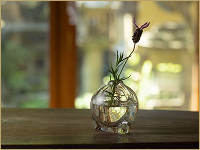
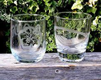
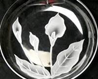

吹きガラス (土日月限定) ▶
◆ Cグラス・一輪挿し・小鉢・ぐい吞み類・モールドロックグラス
1200℃の窯から巻き取ったガラスを、竿を回しながら吹きます。木のコテで底になる部分を平らにします。竿から切離して、口を広げて出来上がりです。
制作時間：20分程度
体験料 ：4500円
対象年齢：中学三年生～

◆ ミニグラス
小学３年生から体験出来るメニュー。手のひらサイズのグラスですが、本格的な吹きガラス制作を体験できます。
制作時間：20分程度
体験料 ：4500円
対象年齢：中学三年生～
◆ ミニー輪挿し
ガラスをぷぅーっと吹いてから底を平らにし、切離して出来上がりです。簡単な工程なので、小学生にお勧めです。
制作時間：20分程度
体験料 ：4500円
対象年齢：中学三年生～
サンドブラスト ▶
ご自分で選んだグラスに絵柄を切り抜いたシールを貼り、砂を吹き付けてくもりガラス状にします。
世界に一つだけのオリジナルグラスを作ってみませんか？
型抜きの道具をご用意しております。団体様にお勧めです。
出張体験も承っております。(詳しくは こちら)
種類：各種ガラス
制作時間：30～
体験料：1200円 ＋ グラス代350円～
対象年齢：三歳以上
備考
：予約不要です。(団体様の場合はお電話にてご予約下さい。)

